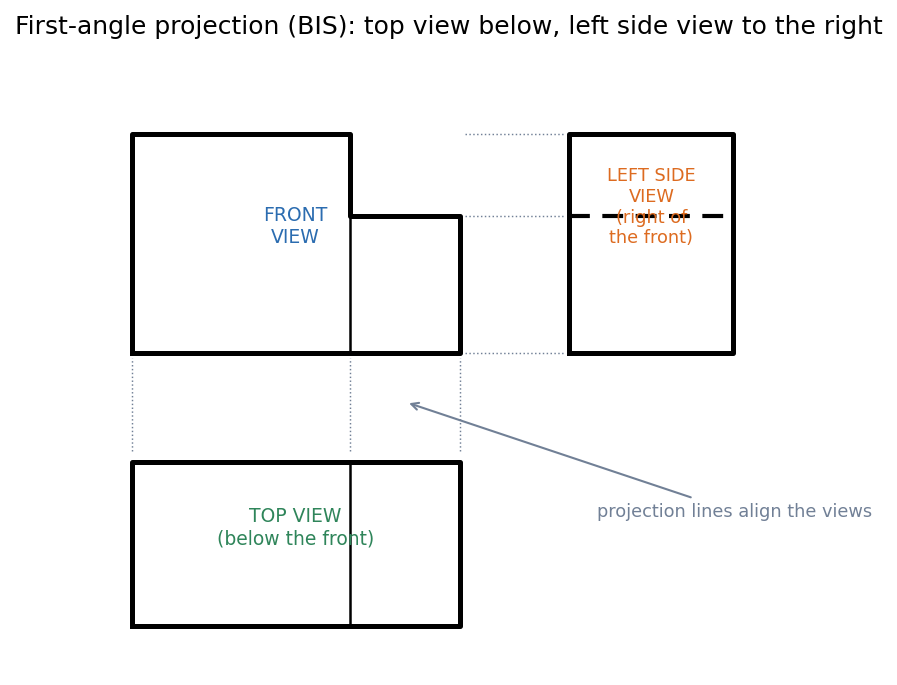

Projection Symbol and First-Angle Projection
To show a 3-D part on flat paper you draw several orthographic views (looking straight at it from the front, top, side). The only question is where each view goes on the sheet. First-angle projection (used in India and Europe, per BIS) places the object between you and the view: the top view goes below the front view and the left-side view goes to the right. The title block carries a projection symbol so the reader knows which convention was used.
First angle: the rule
Imagine the object in the first quadrant between a vertical plane (behind it) and a horizontal plane (below it). Projecting through the object onto those planes and then unfolding them gives:
- Front view (looking at the front) at the top-left;
- Top view (looking down) below the front view;
- Left-side view (looking from the left) to the right of the front view.
The views stay aligned: widths line up vertically between front and top views, heights line up horizontally between front and side views.

Figure: A stepped block in first angle. The top view lies below the front, aligned by the dotted projection lines. The left-side view lies to the right of the front; the step line in it is dashed because from the left the notch is hidden behind the block.
| First angle | Third angle | |
|---|---|---|
| Top view is placed | below the front view | above the front view |
| Left-side view is placed | right of the front view | left of the front view |
| Object relative to plane | between you and the plane | plane between you and the object |
| Used in | India (BIS), Europe | USA, Canada |
🎯 Predict first: you see the left-side view drawn to the right of the front view. Is that a mistake?
Not in first angle. The view of the left face appears on the opposite side from where you stood: it is a trap that catches everyone once. In third-angle projection the same view would sit on the left.
🧠 Memory hook
First angle: the view is "projected through" the object, so the view lands on the far side. Top goes down, left goes right. The little truncated-cone symbol in the title block is how a drawing says which system it uses.
Method
- Choose the front view to show the most features and the most natural orientation.
- Draw it; then draw the top view below it, aligned by projection lines (widths match).
- Draw the left-side view to the right, aligned horizontally (heights match).
- Mark hidden features with dashed lines (Lettering and Types of Lines).
- Add the projection symbol to the title block (Paper Sizes and Sheet Layout).
Worked example
🔬 L-shaped block with a notch at the top right
Front view (looking at the face): an L-shape with the notch at upper right. Top view (below): a rectangle with a line at where the step drops (visible from above). Left-side view (right of the front): a rectangle; the step at height is hidden from this side, so it is drawn dashed. Check: the width appears in both the front and top views; the height appears in both the front and side views.
⚠️ Mixing conventions on one sheet
Placing the top view above a front view while the title block says first angle will make the part be read as its mirror image. Match the symbol to the layout.
Self-check
Connections
- Previous: Dimensioning - Dimension, Extension and Leader Lines · Course map: Engineering Drawing - MOC
- Cross-domain: Computer Aided Machine Drawing - MOC continues with sections and assemblies; Rotation Matrix and Vector Transformation shows the same "same object, different viewing axes" idea in mathematics.
Metadata
- Status: draft · Type: concept · Difficulty: beginner
- Course map: Engineering Drawing - MOC